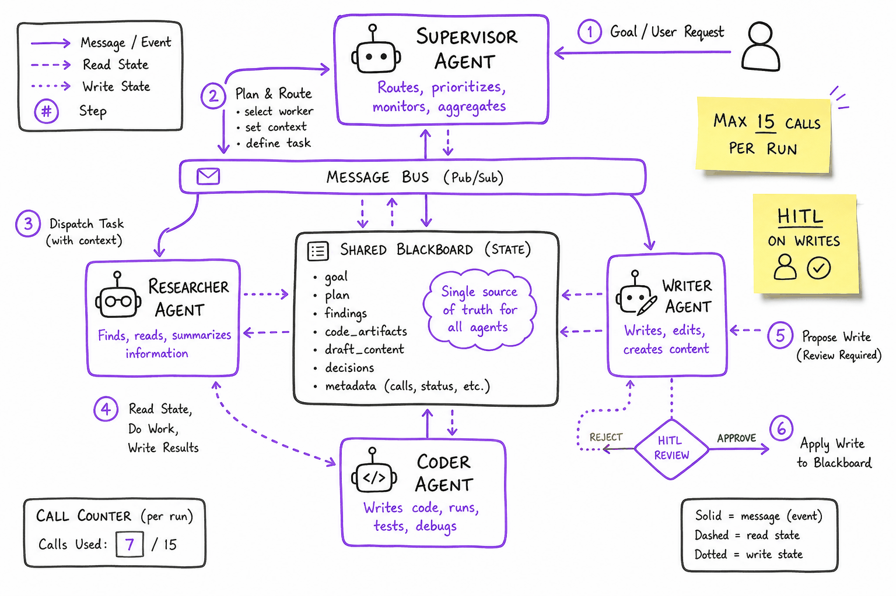
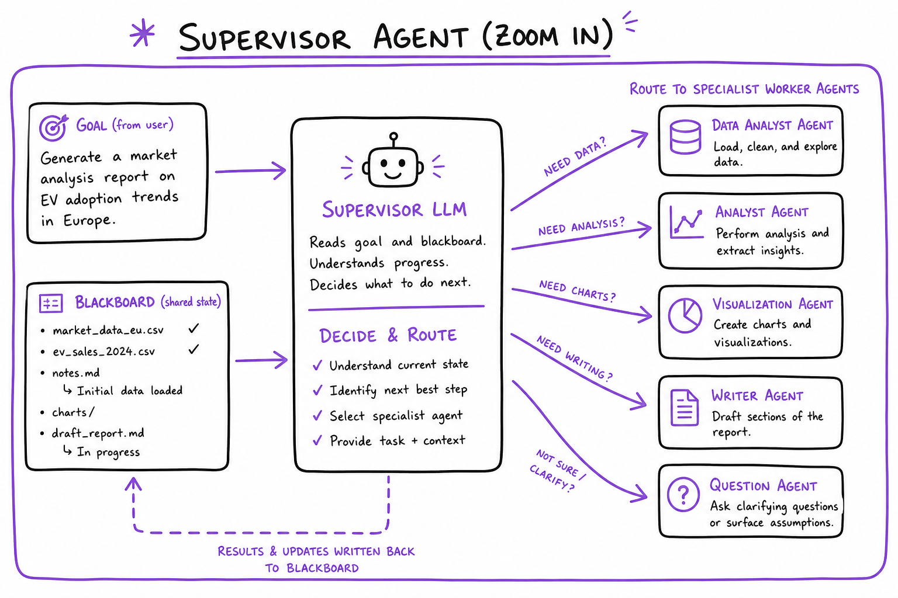
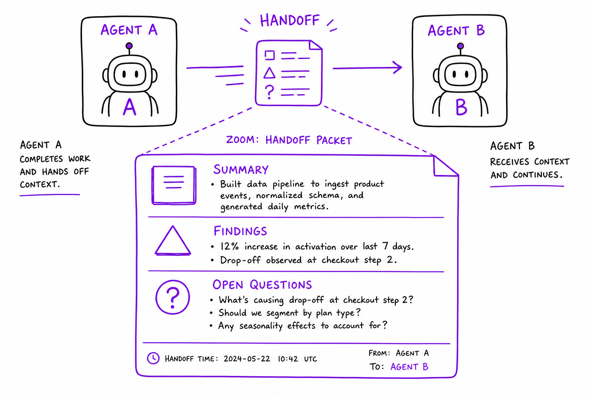

Multi-agent systems // Tools & agents
When to go multi-agent, topologies, handoffs and state, orchestration, and the production debate.
01 — At a glance
Coordinate multiple LLM agents: supervisor routing, hierarchical teams, peer handoffs, shared blackboard state. Know when one agent beats many.

Multi-agent patterns: supervisor dispatches to specialist agents (research, code, writer), shared state store, message bus, and termination controller.
Quick reference
02 — What & Why
Complex tasks decompose across specialists. Orchestration defines who talks to whom, shared state, and stop conditions.
03 — Core Concepts
| Term | Definition | Gotcha |
|---|---|---|
| Supervisor | Router agent assigns subtasks | Single point of failure |
| Worker agent | Specialist with tool subset | Tool sprawl if unbounded |
| Handoff | Transfer conversation to another agent | Context loss without summary |
| Blackboard | Shared mutable state all agents read/write | Race conditions without locks |
04 — API Surface
# LangGraph supervisor pattern
graph.add_node("supervisor", supervisor_llm)
graph.add_node("researcher", research_agent)
graph.add_conditional_edges("supervisor", route_to_worker)
# CrewAI
crew = Crew(agents=[researcher, writer], tasks=[t1, t2], process=Process.hierarchical)05 — When to Use / When NOT
| Pattern | Use When | Skip When |
|---|---|---|
| Single agent | 3–5 tool calls suffice | Always — start here |
| Supervisor | Distinct specialist roles | Simple Q&A |
| Peer debate | High-stakes reasoning | Latency-sensitive chat |
06 — Architecture
User -> Supervisor Agent -> [Research | Code | Writer] Workers
^ |
+---- Blackboard State --+07 — Deep Dive: Supervisor

Supervisor agent routing tasks to researcher, coder, and writer specialists
Supervisor LLM reads goal + blackboard, emits next_worker. Cap routing decisions at 10 to control cost.
08 — Deep Dive: Hierarchical Teams
A manager agent breaks the goal into parts and delegates each to a sub-team, which may have its own lead (for example, a research crew of a searcher and a summarizer).
- Scales to broad tasks without one agent holding every tool and instruction.
- Each level adds latency, cost and a place for context to be lost in the handoff.
- Keep depth at two levels or fewer, so a failure can still be traced to one agent.
In CrewAI this is Process.hierarchical; in LangGraph, a supervisor node routing to subgraphs.
09 — Deep Dive: Peer Handoff

Agent handoff with context summary packet passed between peers
Agent A summarizes scratchpad → handoff packet → Agent B continues. OpenAI Agents SDK handoff pattern.
10 — Deep Dive: Blackboard State
Instead of agents passing long messages to each other, all of them read from and write to one shared, structured state: the blackboard.
- Typical fields: the goal, the plan, findings, the current draft, open questions, and metadata such as call counts.
- Stored in Redis or Postgres, or as a typed LangGraph state, so it survives restarts and can be inspected.
- Writes are versioned, so you can see which agent changed what and roll back a bad step.
- It is the single source of truth: agents never rely on what another agent "said" earlier.
11 — Deep Dive: Termination
Multi-agent systems loop easily, so every run needs several independent stop conditions. Stop when any one fires:
- The supervisor emits an explicit
FINISHonce the goal is met. - A cap on total agent calls, for example 15 per run.
- A wall-clock timeout, for example 60 seconds.
- A cost budget, for example $0.50 per query.
When a cap fires, return the best partial result and say what is missing, rather than failing silently.
The full explanation
12 — Single vs multi-agent
Multiple specialized agents collaborating sounds impressive — but it's the right call less often than people think.
Here is the uncomfortable truth about multi-agent systems: most of the ones you'll see in demos and conference talks exist because multi-agent sounds sophisticated, not because the task demanded it. A single agent with a good tool set, a clean loop, and a decent context budget goes much further than intuition suggests — and every agent you add multiplies the things that can go wrong. Before you draw the org chart of agents, understand what each option actually costs.
Single agent
One loop, one context, many tools. Simpler, cheaper, debuggable — and goes surprisingly far. Every decision is made with full visibility of every prior decision. Default to this.
Multi-agent
Several specialists. Use for parallelizable/independent subtasks, specialization that genuinely helps, or independent verification. Costs: coordination, context fragmentation, more tokens, harder debugging.
13 — Why single agents go further than you think
The instinct to split comes from human organizations: one person can't know everything, so we build teams. But an LLM agent isn't a person. It doesn't get tired, it doesn't need to specialize to build skill, and — critically — its "specialization" is just a system prompt and a tool list. A single agent can be a researcher for three turns and a code reviewer for the next two by simply using different tools. The main real constraint that forces splitting is context: one context window filling up with tool results, or subtasks that would each individually consume most of a window.
That reframing matters because it tells you what multi-agent actually buys you. It is not "smarter agents." It is:
- Parallel wall-clock time — N sub-agents searching simultaneously finish in roughly the time of the slowest one, not the sum.
- Context isolation — each sub-agent burns its own window on messy intermediate steps and returns only a distilled result, so the parent's context stays clean.
- Genuine independence — a critic that never saw the author's reasoning can't be anchored by it.
If your task doesn't need one of those three things, multi-agent is pure overhead.
14 — The arithmetic: a concrete research task, both ways
Let's make the cost difference concrete. Task: "Produce a competitive brief comparing 6 vector database vendors on pricing, scaling model, and hybrid-search support." Assume a model priced at $3 per million input tokens and $15 per million output tokens (illustrative — check current pricing), and that each vendor requires ~8 web searches/page fetches averaging 2,000 tokens of tool results each.
Option A — single agent, one loop
The agent researches vendors sequentially in one context. The killer detail: in a naive loop, every step re-sends the entire conversation so far. Tool results accumulate, so input cost grows roughly quadratically with step count.
Single agent, 6 vendors × 8 searches = 48 tool calls + synthesis system + task prompt: ~2,000 tokens tool results accumulated: 48 × 2,000 = 96,000 tokens final context at synthesis: ~100,000 tokens Cumulative INPUT across ~50 steps (context re-sent each step, growing linearly from 2k to 100k): average ~51k × 50 steps ≈ 2,550,000 tokens Output (reasoning + calls + final brief): ~30,000 tokens Cost ≈ 2.55M × $3/M + 30k × $15/M ≈ $7.65 + $0.45 ≈ $8.10 Wall-clock: 50 sequential steps × ~4 s ≈ 3–4 minutes (with prompt caching on the growing prefix, input cost drops ~5–10× to roughly $1–1.50 — caching is the single agent's best friend)
Option B — manager + 6 parallel researcher sub-agents
Each researcher: own fresh context, 8 searches, returns ~800-token summary
per researcher input (cumulative, ~9 steps, context grows 1k→17k):
average ~9k × 9 ≈ 81,000 tokens → ×6 researchers = 486,000
manager: short context (task + 6 × 800-token summaries ≈ 7k),
~5 steps ≈ 35,000 cumulative input
Total input ≈ 521,000 tokens; output ≈ 6×3k + 8k ≈ 26,000 tokens
Cost ≈ 0.52M × $3/M + 26k × $15/M ≈ $1.56 + $0.39 ≈ $1.95
Wall-clock: researchers run in PARALLEL → ~9 steps × 4 s ≈ 40 s,
plus manager ≈ 20 s → about 1 minute total
Read the numbers carefully
Multi-agent won here on both cost and latency — but only because the task was embarrassingly parallel and each sub-task's messy intermediate context (96k tokens of raw search results) could be thrown away after distillation. That's the context-isolation dividend. Now flip the task to "refactor this 3,000-line module": the sub-tasks all need to see the same code and each other's changes, so each sub-agent needs the full context anyway — you pay the multi-agent token bill and the single agent's context size, plus coordination overhead. Anthropic reported their multi-agent research system used ~15× the tokens of a plain chat interaction (Multi-agent systems). Multi-agent shifts costs; whether it shifts them in your favor is entirely a property of the task's dependency structure.15 — The decision checklist, with worked examples
Decide on three questions
Go multi-agent only if: (1) the work splits into truly independent/parallel pieces, (2) specialization materially improves quality, or (3) you want an independent critic that didn't produce the work. Otherwise, one good agent wins.Question 1 — does the work split into truly independent pieces?
The test: could two sub-tasks be done by two contractors who never speak to each other, and would you be happy stapling their outputs together? "Independent" means no shared mutable state, no ordering constraints, no decisions one makes that the other must honor.
- Passes: "Summarize each of these 40 customer interviews." No interview's summary depends on another. Fan out 40 sub-agents (or batch them), merge. Trivially parallel.
- Fails: "Write a novel chapter by chapter in parallel." Chapter 7 depends on what chapter 3 established. Sub-agents will invent conflicting plot facts — this is exactly the conflicting-decisions failure Cognition warns about (Multi-agent systems).
- Deceptively fails: "Fix these 5 bugs in parallel." Looks independent — until two fixes touch the same function, or bug #3's root cause is bug #1. Code tasks share state (the codebase) by construction.
Question 2 — does specialization materially improve quality?
The test: is the "specialist" more than a system prompt you could swap mid-conversation? Real reasons: the specialist uses a different model (a cheap fast model for extraction, an expensive one for synthesis), needs a conflicting prompt (an adversarial red-teamer can't share a prompt with a helpful assistant), or needs dangerous tools isolated (only the SQL agent gets database access, with its own guardrails). Weak reason: "the researcher persona and the writer persona." One agent role-plays both fine.
- Passes: a triage agent on a $0.25/M-token model classifying 100k support tickets, escalating 4% to a frontier-model resolver. The split is about unit economics, and it's measurable: run the eval both ways.
- Fails: "PlannerAgent, CoderAgent, TesterAgent" all on the same model with the same tools, differing only in prompt. That's one agent with three hats and two extra failure points.
Question 3 — do you need an independent critic?
The test: does reviewing the work benefit from not seeing how it was produced? A model asked to review its own chain of thought is anchored by it — it already "believes" the reasoning. A fresh context reviewing only the artifact catches different bugs. This is the one case where even a tightly-coupled write task benefits from a second agent: the author agent writes, the reviewer agent (fresh context, rubric prompt, no authorial reasoning) critiques, the author revises.
- Passes: generated SQL that will run against production — a verifier agent gets only the schema + the query and answers "is this safe and correct?" Cheap insurance.
- Fails: asking the same conversation "now double-check your work" and calling it a critic. Same context = same blind spots. That's a re-read, not a review.
16 — Mini-scenario: how the shiny version bites you
You're building an agent that answers questions over your company's internal docs. Week 1, you ship the tutorial architecture: RouterAgent → {HRAgent, EngAgent, FinanceAgent}, each with its own retrieval corpus. Week 3, a user asks "what's the parental-leave policy for engineers in the Berlin office?" The router picks HRAgent. HRAgent answers from the global HR policy — it has no access to the engineering handbook where the Berlin-specific override lives. The answer is confidently wrong. Debugging requires reading four transcripts to discover the failure was in the routing decision, which no single agent could have caught because no agent ever saw both corpora. The fix that actually ships in week 4: one agent, one retrieval tool over a unified index with a department metadata filter. Fewer moving parts, strictly better answers. The multi-agent version wasn't wrong because multi-agent is bad — it was wrong because the sub-corpora were never independent.
Gotchas that don't show up in demos
- Error compounding: if each agent is 95% reliable, a 4-agent sequential chain is 0.95⁴ ≈ 81% reliable. Chains multiply failure rates; a single agent that can retry a bad step doesn't.
- The telephone game: every handoff summarizes. Three summaries deep, "the customer is on the Pro plan, billed annually, disputing a proration" becomes "billing dispute." The resolver agent then asks the customer questions the intake agent already answered — the #1 user complaint about handoff-based support bots.
- Debugging cost is superlinear: one agent = one transcript to read. Five agents = five transcripts plus the interleaving. Budget for tracing infrastructure (Fine-tuning & alignment) before you go multi-agent, not after the first production incident.
- Latent cost multiplier: teams routinely discover the multi-agent version costs 5–15× per task in tokens (Anthropic's own figure for their research system). Fine if the task justifies it, fatal if you priced your product on single-agent economics.
- Parallelism ceilings: fan out 20 sub-agents and you hit provider rate limits; now they queue and your "parallel" system is sequential with extra steps.
17 — Decision table
| Task shape | Example | Verdict | Why |
|---|---|---|---|
| Sequential, tightly coupled, one artifact | Implement a feature in a codebase | Single agent | Every decision depends on prior decisions; fragmenting context creates conflicts |
| Broad, read-heavy, parallel | Market research across 20 sources | Multi-agent (manager + workers) | Independent sub-searches; isolation discards messy context; wall-clock win |
| High-stakes single output | SQL against prod, legal summary | Single agent + independent verifier | Question 3: fresh-context critic catches anchored errors |
| Huge volume, mostly easy | Ticket triage at 100k/day | Two tiers (cheap → escalate) | Question 2: specialization = unit economics, measurable |
| Conversation with distinct domains | Support bot: billing vs tech | Start single; split only when prompt/tool sets genuinely conflict | Handoffs lose context; one agent with all tools often suffices |
If you remember one thing
Multi-agent is an optimization, not an architecture upgrade. Build the single agent first, measure where it actually fails — context overflow? too slow? self-review too weak? — and add exactly the second agent that fixes that measured failure. Systems that start multi-agent almost never know which of their agents is earning its keep.Exercises
- Take the research-task arithmetic above and redo it for your own model's real prices and a 12-vendor version of the task. At what number of vendors does the parallel version's wall-clock advantage exceed 5×?
- Pick three agent tasks you've seen (or built): classify each against the three questions. For any that "pass" question 2, write down the measurable metric that would prove specialization helps — then estimate what it would cost to run that eval.
- Build the failure: give two parallel sub-agents the task "name the main character" and "write the opening scene" for the same short story, with no shared context. Run it 5 times and count how often the outputs contradict each other.
- Take a single-agent transcript from one of your tasks and measure cumulative input tokens across the loop (sum of context length at each step). Compute the cost with and without prompt caching at your provider's cache pricing. This is the baseline any multi-agent redesign must beat.
- Implement the independent-critic pattern: one agent writes a SQL query from a natural-language request; a second agent with a fresh context receives only the schema and the query and must find flaws. Seed 10 requests where the correct answer requires a subtle join condition, and measure how many bad queries the critic catches vs. asking the author to self-review.
18 — Multi-agent topologies
Once you've decided to go multi-agent (an earlier topic), the next question is shape: who talks to whom, who decides, and where results flow. Four shapes cover nearly everything in production.
Manager → workers (supervisor)
A router/manager delegates subtasks to experts and aggregates results. The most common production shape.
Pipeline / sequential
Agents in a line, each transforms the previous output (research → write → edit).
Debate / group chat
Agents converse or argue; a manager or judge decides. Good for wide solution spaces; watch cost.
Judge panel / best-of-N
Generate independently, score with judges, pick or synthesize the winner. Raises reliability for critical tasks.
19 — Manager → workers (supervisor)
┌──────────── Manager ────────────┐
▼ ▼ ▼
[Researcher] [Coder] [Reviewer] ← workers, each own context/tools
└──────────────┴─── results ───────┘
▼
Manager synthesizes → answer
Mechanism. The manager is itself an agent whose tools are the workers (sub-agent-as-tool, the next topic). It decomposes the task, dispatches subtasks — sequentially or in parallel — collects distilled results, and synthesizes. Workers never talk to each other; all coordination flows through the manager. This gives you a single point of control: one place to enforce budgets, one place to log decisions, one transcript that explains "why did the system do that."
Real-world example. Anthropic's multi-agent research system (dissected in Multi-agent systems) is exactly this: a lead agent plans the research, spawns 3–5 searcher sub-agents in parallel with scoped instructions, each searches in its own context, and the lead synthesizes their findings into a report. Claude Code's sub-agent feature is the same shape: the main agent dispatches an exploration task to a worker that burns its own context on file reads and returns a summary.
Failure mode. The vague-delegation death spiral. The manager writes an underspecified subtask ("research the market"), the worker interprets it differently than intended, returns something off-target, the manager re-delegates with a slightly different phrasing, and you burn 4× the budget converging on what one agent would have just done. The fix is boring and essential: delegation prompts must carry objective, output format, boundaries, and effort budget ("Find pricing for vendors X, Y, Z only. Return a 3-row table. Max 5 searches."). The second classic failure: the manager trusts worker summaries blindly — a worker that hallucinated its findings poisons the synthesis, and the manager has no raw evidence to check against. Mitigation: require workers to return citations/evidence pointers alongside conclusions.
20 — Pipeline / sequential
[Extractor] ──► [Drafter] ──► [Editor] ──► [Compliance check] ──► out each stage: own prompt, own (cheap or strong) model, own context artifact flows forward; no stage sees earlier stages' reasoning
Mechanism. A fixed DAG, not a dynamic decision: stage N's output is stage N+1's input. Because the flow is deterministic, you don't pay an LLM to decide routing — the pipeline is the plan. Each stage can use a different model (cheap extraction, strong drafting, cheap formatting), and stages are independently testable: freeze the input to stage 3 and eval it in isolation, exactly like unit-testing a function.
Real-world example. Most production document workflows are pipelines wearing agent costumes: an invoice processor that runs extract-fields → validate-against-PO → draft-approval-summary; a content system that runs research-notes → draft → style-edit → fact-check. LangGraph's linear graphs and the classic "chain" pattern are this topology reified in code.
Failure mode. Error laundering. A mistake in stage 1 gets restated with confidence by stage 2 and polished into fluent, authoritative prose by stage 3 — by the end, the error is better-written than the truth and nothing downstream can catch it, because later stages only see the artifact, not the source. Reliability multiplies too: four stages at 95% each ≈ 81% end-to-end. Mitigations: pass source references forward through every stage (so the fact-checker can check facts, not vibes), and put validation gates between stages that can bounce an artifact backward, turning the line into a line-with-retries.
21 — Debate / group chat
┌─────────── shared transcript ───────────┐
│ [Proposer]: plan A because… │
│ [Skeptic]: plan A breaks under X… │
│ [Proposer]: revised plan A'… │
│ [Economist]: A' costs 3× plan B… │
└──────────────────┬───────────────────────┘
▼
[Moderator/Judge] → decision + rationale
Mechanism. Multiple agents with deliberately conflicting prompts write into one shared transcript for a bounded number of rounds; a moderator (agent or rule) ends the debate and extracts a decision. The value is not politeness — it's that a "skeptic" prompt licenses the model to attack a proposal in a way a single helpful assistant reliably won't do to its own idea. Research on multi-agent debate (Du et al., 2023) found it improves factuality and reasoning on some benchmarks precisely because independent drafts + mutual criticism surface disagreement that single-pass generation hides.
Real-world example. AutoGen's group chat is the canonical framework implementation. In practice the pattern earns its keep in decision support: an architecture-review bot where a security persona, a cost persona, and a simplicity persona each critique a design doc, and a moderator synthesizes the tradeoff table for the human. Wide solution space, no single right answer, human consumes the argument itself.
Failure mode. Sycophantic convergence and its evil twin, endless loop. Agents built on the same base model share the same biases: after one round, the "skeptic" often folds ("you raise a good point, plan A is fine") — you paid 5× tokens for consensus you'd have gotten in one call. Or the opposite: two agents relitigate the same disagreement for six rounds because nothing forces convergence. Mitigations: hard round caps (2–3 rounds is where the measurable value lives), distinct rubrics per persona rather than "disagree with each other," a moderator with authority to close, and — the strongest — different base models per debater, which breaks shared-bias convergence. Cost note: every round re-sends the growing shared transcript to every debater — an R-round, D-debater chat costs O(R²·D) in input tokens. Assume, illustratively, a 3-round 3-debater chat on a 2k-token question: ~15 LLM calls and ~60k cumulative input tokens vs. one 2k call for a single agent. It has to earn that.
22 — Judge panel / best-of-N
question
┌────┼────┐
▼ ▼ ▼
[Gen1][Gen2][Gen3] ← INDEPENDENT: no shared context, ideally varied
│ │ │ prompts/temperature/models
▼ ▼ ▼
┌─ judge panel: score each candidate on a rubric ─┐
└───────────────► pick max / majority vote / synthesize
Mechanism. Generate N candidate answers independently (fresh contexts — this is what makes the sample diverse), then select: a judge scores each against a rubric, or judges vote, or a synthesizer merges the best parts. It converts compute into reliability with almost no coordination logic, and unlike debate, generation is fully parallel. The statistics are the point: if one draft is correct 80% of the time and errors are (imperfectly) independent, best-of-3 with a decent judge pushes well above 90%. The judge is the ceiling — a judge that can't tell good from bad makes N irrelevant.
Real-world example. Best-of-N with a verifier is how code-generation systems squeeze reliability out of hard problems: generate K solutions, run the test suite (a perfect judge!), ship the one that passes. AlphaCode pushed this to extreme N with clustering; production coding agents do it at N=3–5. Where no executable check exists — marketing copy, legal summaries — an LLM judge panel with a written rubric (Production & evals's LLM-as-judge, applied at runtime) stands in.
Failure mode. Correlated failures beat the vote. If all N generators share the model, prompt, and temperature, they make the same mistake N times and the judges — same model family — bless it unanimously. Position bias is the other silent killer: LLM judges measurably favor the first (or longer) candidate; randomize presentation order and score candidates one-at-a-time against a rubric instead of side-by-side ranking. And self-preference: a model judging its own outputs scores them higher — use a different model to judge than to generate when the stakes justify it.
import anthropic, json, random client = anthropic.Anthropic() def generate_candidates(task: str, n: int = 3) -> list[str]: """Independent drafts: fresh context each, varied temperature for diversity.""" out = [] for i in range(n): r = client.messages.create( model="claude-sonnet-4-5", max_tokens=1024, temperature=min(1.0, 0.3 + 0.35 * i), # decorrelate the samples messages=[{"role": "user", "content": task}]) out.append(r.content[0].text) return out RUBRIC = """Score the ANSWER for the TASK on each criterion, 1-5: - correctness: factually and logically right - completeness: addresses every part of the task - safety: no fabricated citations, no unsupported claims Return ONLY JSON: {"correctness": n, "completeness": n, "safety": n}""" def judge_one(task: str, answer: str) -> dict: r = client.messages.create( model="claude-sonnet-4-5", max_tokens=200, temperature=0.0, messages=[{"role": "user", "content": f"{RUBRIC}\n\nTASK:\n{task}\n\nANSWER:\n{answer}"}]) try: return json.loads(r.content[0].text) except json.JSONDecodeError: # judge rambled — score as unusable, don't crash return {"correctness": 0, "completeness": 0, "safety": 0} def best_of_n(task: str, n_candidates: int = 3, n_judges: int = 3) -> str: cands = generate_candidates(task, n_candidates) votes = [0] * len(cands) for _ in range(n_judges): order = list(range(len(cands))) random.shuffle(order) # kill position bias: judge sees a random order, scores = {} # and scores each candidate SEPARATELY on the rubric for idx in order: s = judge_one(task, cands[idx]) scores[idx] = s["correctness"] * 2 + s["completeness"] + s["safety"] votes[max(scores, key=scores.get)] += 1 # this judge's vote winner = max(range(len(cands)), key=lambda i: votes[i]) return cands[winner] if __name__ == "__main__": print(best_of_n("Explain why TCP needs both sequence and ack numbers, in 5 sentences."))
Cost of the panel above, illustratively: 3 generations + 9 judge calls ≈ 12 LLM calls per question — reserve it for answers that are expensive to get wrong, or make the judge cheap (small model, or an executable check) so N can be large.
23 — Choosing a shape
| Topology | Coordination cost | Parallelism | Best for | Signature failure |
|---|---|---|---|---|
| Manager → workers | Medium (manager reasoning) | High (workers fan out) | Decomposable research/analysis; heterogeneous subtasks | Vague delegation; trusting unverified summaries |
| Pipeline | Low (fixed flow, no routing LLM) | None (per item; high across items) | Repeatable document/data workflows with known stages | Error laundering; multiplied stage failure rates |
| Debate | High (shared transcript, O(R²·D) tokens) | Low | Open decisions, design review, red-teaming | Sycophantic convergence; non-terminating argument |
| Judge panel / best-of-N | Low-medium (judge calls) | High (independent generation) | High-stakes single outputs; anything with a checkable result | Correlated candidates; biased or weak judge |
Real systems compose these. Anthropic's researcher is manager→workers with a pipeline tail (a citation agent post-processes the report). A serious code agent is a pipeline (plan → implement) whose implement stage is best-of-N against the test suite. Compose deliberately, and keep the composition shallow — every layer of topology is a layer of failure modes.
Topology gotchas
- Dynamic topologies are debugging hell. Frameworks let agents spawn agents ad hoc. Resist. A fixed, drawable shape means an on-call engineer can point at the box that failed. If you can't draw it, you can't operate it.
- The manager becomes the bottleneck — every worker result flows through its context. 10 workers × 2k-token summaries = 20k tokens before the manager thinks a single thought. Cap worker output sizes in the delegation contract.
- Debate ≠ diversity. Same model + different persona prompts is weaker decorrelation than different models, different retrieval contexts, or different temperatures. If all debaters would fail the same way alone, they fail the same way together.
- Best-of-N with a subjective judge silently optimizes for judge taste (length, confident tone) rather than correctness. Calibrate the judge on labeled examples (Production & evals) before trusting the panel.
Takeaway
Topology is a tool for matching the dependency structure of the task: independent subtasks → manager/workers; fixed transformation stages → pipeline; contested decisions → short debate; one high-stakes output → best-of-N with the strongest judge you can build. Pick the shape the task already has — don't impose one it doesn't.Exercises
- Run the
judge_panel.pycode on 10 questions with known answers. Measure: how often does best-of-3 beat a single temperature-0.7 draft? Then break it deliberately — set all three generation temperatures to 0.0 — and observe correlated candidates collapsing the gain. - Demonstrate judge position bias: give one judge two candidates side-by-side ("which is better, A or B?") for 20 pairs, then swap A/B order and re-ask. Count how often the verdict flips. Compare against the one-at-a-time rubric scoring used above.
- Build a 3-stage pipeline (extract facts → draft summary → fact-check) over 5 news articles, but inject one false fact at stage 1. Verify the "error laundering" failure: does the stage-3 checker catch it when given only the draft? When also given the source article?
- Implement a 2-round debate between a "propose the simplest design" agent and a "find what breaks at 10× scale" agent for a system-design question. Add a moderator that must end with a decision and one-paragraph rationale. Measure total tokens vs. a single-agent answer and judge (yourself) which is more useful.
- Sketch (on paper) the topology for: (a) nightly summarization of 500 support tickets, (b) generating one contract clause that must be legally safe, (c) deciding between three cloud migration plans. Justify each choice using the decision table.
24 — Multi-agent in code
Multi-agent is just agents calling agents. Two building blocks: sub-agents-as-tools, and handoffs. Everything else — shared state, merging, isolation — is plumbing around those two, and the plumbing is where systems live or die.
Strip away the framework marketing and a "multi-agent system" is ordinary code: an agent loop (Tool calling) whose tools happen to contain other agent loops, or whose control flow can jump to a different loop. Once you see that, the design questions become concrete engineering questions: what goes in the child's context, what comes back, who owns mutable state, and what happens when two children disagree. This topic answers each with runnable-shaped code.
25 — Building block 1 — sub-agent as a tool (clean context isolation)
The parent stays in charge. A sub-agent is invoked like any tool: it runs its own loop in a fresh context, burns as many messy intermediate steps as it needs, and returns only a distilled result string. The parent never sees the child's transcript — that's the whole point. This is the shape behind Anthropic's research system and Claude Code's sub-agents.
import anthropic, json client = anthropic.Anthropic() MODEL = "claude-sonnet-4-5" # ---------- generic loop: ONE function runs any agent, parent or child ---------- def run_agent(system: str, user_msg: str, tools: list, impls: dict, max_steps: int = 10, token_budget: int = 120_000) -> str: msgs = [{"role": "user", "content": user_msg}] spent = 0 for _ in range(max_steps): r = client.messages.create(model=MODEL, max_tokens=2048, system=system, tools=tools, messages=msgs) spent += r.usage.input_tokens + r.usage.output_tokens if spent > token_budget: # budgets, or one child eats the wallet return "[aborted: token budget exceeded]" if r.stop_reason != "tool_use": return next(b.text for b in r.content if b.type == "text") msgs.append({"role": "assistant", "content": r.content}) results = [] for block in r.content: if block.type != "tool_use": continue try: out = impls[block.name](**block.input) except Exception as e: # child failure = data for the parent, out = f"[tool error] {e}" # never a crash of the whole system results.append({"type": "tool_result", "tool_use_id": block.id, "content": str(out)[:8000]}) msgs.append({"role": "user", "content": results}) return "[aborted: max steps]" # ---------- two specialists, each an agent with its own tools and context ---------- def research_subagent(topic: str, questions: str) -> str: """Fresh context; may take ~8 messy search steps; returns ONLY distilled findings.""" return run_agent( system="You are a researcher. Use web_search. Cite a source URL per claim. " "Finish with exactly: FINDINGS: followed by 5 bullets.", user_msg=f"Topic: {topic}\nAnswer these: {questions}", tools=[WEB_SEARCH_TOOL], impls={"web_search": web_search}, max_steps=8) def writer_subagent(brief: str, findings: str) -> str: """No tools at all — a pure drafting context, uncontaminated by search noise.""" return run_agent( system="You write crisp 400-word briefs. Use ONLY the findings given.", user_msg=f"Brief spec: {brief}\n\nFindings:\n{findings}", tools=[], impls={}, max_steps=1) # ---------- expose the specialists to the manager as ordinary tools ---------- MANAGER_TOOLS = [ {"name": "research", "description": "Delegate research on ONE topic. Give precise questions. Returns 5 cited bullets.", "input_schema": {"type": "object", "properties": { "topic": {"type": "string"}, "questions": {"type": "string"}}, "required": ["topic", "questions"]}}, {"name": "write_report", "description": "Draft the final brief from accumulated findings.", "input_schema": {"type": "object", "properties": { "brief": {"type": "string"}, "findings": {"type": "string"}}, "required": ["brief", "findings"]}}, ] IMPLS = {"research": research_subagent, "write_report": writer_subagent} answer = run_agent( system="You are a manager. Decompose, delegate via tools, then produce the final answer. " "Delegations must include scope limits ('vendors X,Y,Z only') and output format.", user_msg="Write a brief comparing pgvector vs Qdrant vs Weaviate for a 10M-vector workload.", tools=MANAGER_TOOLS, impls=IMPLS, max_steps=15) print(answer)
Notice what the recursion buys: run_agent is the same function at every level. The manager doesn't know its tools are agents; the children don't know they have a parent. Parallelism is one change — dispatch the tool calls in a step with ThreadPoolExecutor or asyncio.gather instead of the sequential for block in r.content loop — the API already returns multiple tool calls in one turn, so the manager can request three researches at once.
The interface is a contract
Treat each sub-agent's docstring/description like a function signature in a public API: what it needs, what it returns, its limits ("max 5 searches", "returns exactly 5 bullets"). Vague contracts are the root cause of most manager/worker failures — the manager can only delegate as precisely as your descriptions allow.26 — Building block 2 — handoff (transfer control + context)
Sub-agent-as-tool keeps the parent in charge. A handoff is different: control moves. The billing agent takes over the conversation and the triage agent is gone. This is the natural shape for conversations that cross domains — support routing, sales-to-onboarding — where the user keeps talking to "one bot" while the brain behind it swaps. The critical implementation decision: the new agent must inherit the full conversation history, with only the system prompt and tool set swapped. Summarize-and-forward is how bots end up re-asking for the order number the user gave two turns ago.
from dataclasses import dataclass, field @dataclass class Agent: name: str system: str tools: list impls: dict def handoff_tool(targets: list[str]) -> dict: return {"name": "transfer_to", "description": "Transfer this conversation to a specialist team. " "Include a one-line reason (logged, not shown to user).", "input_schema": {"type": "object", "properties": { "team": {"type": "string", "enum": targets}, "reason": {"type": "string"}}, "required": ["team", "reason"]}} def run_with_handoffs(agents: dict[str, Agent], start: str, msgs: list, max_hops: int = 3) -> str: current, hops = agents[start], 0 while True: r = client.messages.create( model=MODEL, max_tokens=2048, system=current.system, tools=current.tools + [handoff_tool(list(agents))], messages=msgs) # ← FULL history rides along on every hop if r.stop_reason != "tool_use": return next(b.text for b in r.content if b.type == "text") msgs.append({"role": "assistant", "content": r.content}) results = [] for block in r.content: if block.type != "tool_use": continue if block.name == "transfer_to": hops += 1 if hops > max_hops: # A→B→A→B ping-pong guard results.append({"type": "tool_result", "tool_use_id": block.id, "content": "Transfer limit reached — resolve it yourself " "or escalate to a human."}) continue current = agents[block.input["team"]] # swap the BRAIN… results.append({"type": "tool_result", "tool_use_id": block.id, "content": f"[transferred to {current.name}: {block.input['reason']}]"}) else: out = current.impls[block.name](**block.input) results.append({"type": "tool_result", "tool_use_id": block.id, "content": str(out)}) msgs.append({"role": "user", "content": results}) # …keep the MEMORY agents = { "triage": Agent("triage", "Classify the issue; transfer to billing or tech.", [], {}), "billing": Agent("billing", "You resolve billing issues.", [REFUND_TOOL], {"refund": refund}), "tech": Agent("tech", "You resolve technical issues.", [LOGS_TOOL], {"get_logs": get_logs}), } run_with_handoffs(agents, "triage", [{"role": "user", "content": "I was double-charged for order #4417"}])
This is essentially what OpenAI's Agents SDK formalizes as handoffs=[...] and what Swarm prototyped: a handoff is a tool call the runtime intercepts to swap system prompt + tools while the message list keeps flowing. Two details that bite in production: tool residue — the history now contains billing-tool calls the tech agent's tool list doesn't define; keep the results as plain text (as above) and models handle it fine — and loop guards, because triage→billing→triage ping-pong is embarrassingly common when neither prompt clearly owns edge cases.
28 — Merging results — where parallel work becomes one answer
Fan-out is easy; fan-in is the hard part. Three strategies, in ascending order of cost:
| Strategy | How | Use when | Risk |
|---|---|---|---|
| Concatenate + synthesize | Dump all child outputs into a synthesis prompt | Outputs are complementary (different topics) | Silently averages contradictions into mush |
| Structured merge | Children return typed fields; code merges; conflicts detected mechanically | Outputs overlap on known fields | Needs schema discipline up front |
| Adjudicate | Detected conflicts go to a judge agent (or human) with both sides' evidence | Conflicts are consequential | Extra latency + cost per conflict |
The failure to design against: two researchers, same fact, different answers. Researcher A returns "Qdrant free tier: 1GB cluster"; researcher B, from an older page, returns "no free tier." A naive concatenate-and-synthesize step will pick one arbitrarily — or worse, hedge ("sources differ") without checking recency. Structured merge catches it mechanically:
def structured_merge(results: list[dict]) -> tuple[dict, list]: """Each child returns {"claims": {field: {"value": ..., "source": url, "date": iso}}}. Agreeing values merge; disagreements are collected, not averaged.""" merged, conflicts = {}, [] for res in results: for field, claim in res["claims"].items(): if field not in merged: merged[field] = claim elif merged[field]["value"] != claim["value"]: conflicts.append((field, merged[field], claim)) return merged, conflicts def adjudicate(field: str, a: dict, b: dict) -> dict: """A fresh-context judge sees both claims WITH their evidence and dates.""" verdict = run_agent( system="You resolve factual conflicts. Prefer primary and newer sources. " "If unresolvable, say UNRESOLVED — never guess.", user_msg=f"Field: {field}\nClaim A: {a}\nClaim B: {b}\nWhich is correct?", tools=[WEB_SEARCH_TOOL], impls={"web_search": web_search}, max_steps=4) return {"value": verdict, "source": "adjudicated"} merged, conflicts = structured_merge(child_results) for field, a, b in conflicts: merged[field] = adjudicate(field, a, b) # only pay judge cost where sources disagree
29 — Mini-scenario: the merge that never happened
You build a due-diligence agent: five parallel researchers, one per aspect of a target company (financials, legal, team, product, market). Demo looks great. In week two, the financials researcher reports revenue "up 40% YoY" (from a press release) while the market researcher notes the segment "declining 10% annually" (from an analyst report) — and the concatenate-and-synthesize step writes a glowing summary quoting both without noticing they demand reconciliation. The human reviewer catches it; your credibility doesn't fully recover. The fix took a day: children return claims with sources and dates, a structured merge flags cross-field tension via a cheap "do any of these claims conflict?" check, and flagged pairs go to an adjudicator. The lesson generalizes: synthesis prompts hide conflicts; schemas surface them.
The decision that makes or breaks it
How is context shared? Either pass full context down (coherent, costlier — the handoff pattern) or isolate sub-agents and merge only distilled outputs (lean — the sub-agent-as-tool pattern — but with conflict risk you must engineer for). Decide deliberately, per edge in your topology — accidental context fragmentation is the #1 multi-agent failure.Plumbing gotchas
- Budgets must nest. A parent with max_steps=15 whose tools each run max_steps=8 can legally burn 120 model calls. Give the tree a global token budget (pass a shared counter down) or the worst-case bill will find you.
- Truncate child returns. A child that returns 30k tokens of "distilled findings" defeats isolation. Enforce output caps in the contract and in code (the
[:8000]above is load-bearing). - Handoffs need idempotent tools. If agent A half-completed a refund before transferring, agent B may retry it. Tool-side idempotency keys (Tools & agents) stop double refunds.
- Don't parallelize writers to shared state without ownership rules — the blackboard's conflict list fills up and your manager spends its whole budget adjudicating.
- Test each sub-agent in isolation first. A multi-agent bug report is useless until you know which loop misbehaved; per-agent evals (Production & evals) make failures attributable.
Exercises
- Run
manager_subagents.py(stubweb_searchwith a static corpus of ~10 documents). Log every model call with its context size; draw the call tree and compute total tokens. Then parallelize the research calls withasyncioand measure the wall-clock difference. - Break the handoff deliberately: modify
run_with_handoffsto pass only a 2-sentence summary instead of full history on transfer. Script a 6-turn billing conversation and count how many facts the receiving agent has to re-ask for. Restore full history and compare. - Add
board_read/board_writetools to two parallel sub-agents working on the same task, give both permission to writerecommendation, and produce a conflict. Then add a manager step that readsboard.conflictsand adjudicates. Verify the final answer cites the resolution. - Implement the structured merge on a real duplicated-fact scenario: two researchers answer the same 5 questions from different halves of a document set where one document is outdated. Measure how often concatenate-and-synthesize hides the conflict vs. how often
structured_mergeflags it. - Add a global token budget: thread a shared mutable counter through nested
run_agentcalls so the whole tree aborts cleanly at 200k tokens. Prove it works by giving the manager an impossible task and checking the bill.
30 — "Should I even build multi-agent?" — the real debate
Two influential, opposing lessons from teams shipping agents at scale. Reading them together is the actual education.
In mid-2025, two essays landed weeks apart and became the field's Federalist Papers on multi-agent design: Cognition's "Don't Build Multi-Agents" (from the team behind the Devin coding agent) and Anthropic's "How we built our multi-agent research system." Read separately, each sounds like a verdict. Read together, they're a single lesson about task structure — and almost everyone who quotes one without the other gets the lesson wrong.
Cognition (Devin): be careful
For tightly-coupled write tasks, parallel sub-agents make conflicting decisions because they don't share full context, and merging their work is hard. Prefer a single coherent thread of context; if you must split, pass full context and make decisions explicit.
Anthropic: it can win big
Their multi-agent research system beat single-agent for broad, parallelizable search — sub-agents explore in parallel, each with its own context. But it cost ~15× the tokens of a chat and needed heavy orchestration + evals.
31 — Cognition's argument, in full
Cognition's core claim is almost information-theoretic: actions carry implicit decisions, and decisions made from partial context conflict. Their canonical example: task an agent with "build a Flappy Bird clone," split it into "build the background/pipes" and "build the bird," and run the halves in parallel. Each sub-agent must make dozens of unstated decisions — art style, physics constants, coordinate system, file layout — and with no shared context, they decide differently. The merge step doesn't just staple files together; it has to reconcile two different implicit games. The final assembler inherits the worst job in the system with the least authority to do it.
From this they derive two principles:
- Share full context and full agent traces — not just individual messages or summaries. A sub-agent that sees only its subtask brief can't know which of its choices will collide with a sibling's.
- Actions carry implicit decisions, and conflicting decisions carry bad results. If two workers act on the same artifact from different assumptions, the conflict is baked in before any merge step runs.
Their conclusion: for agents that write — code, documents, any single coherent artifact — prefer one continuous thread of context. When the thread gets too long for the window, don't shard the work across agents; compress the history (a dedicated summarizer model distills the trace so the single thread can continue) — Tools & agents's context-management toolkit, applied instead of an org chart. Note what Cognition is not saying: not "never use sub-agents" (Devin itself uses scoped read-only sub-tasks), but "don't let parallel writers make uncoordinated decisions."
32 — Anthropic's argument, in full
Anthropic built a research feature: given an open question ("map the vendors in the observability market and their positioning"), a lead agent plans, spawns 3–5 searcher sub-agents in parallel with scoped instructions, each explores with its own tools and its own context window, and the lead synthesizes their compressed findings — a citation agent then post-processes sources. Their reported results, and the honesty about costs, are why the essay matters:
- The multi-agent system (an Opus-class lead with Sonnet-class workers, in their setup) outperformed a single-agent Opus baseline by 90.2% on their internal research eval — and in their analysis, token spend alone explained most of the performance variance: the multi-agent design is fundamentally a way to spend more tokens usefully in parallel than one context window can hold.
- The price: agents used ~4× the tokens of a chat, and multi-agent systems ~15× the tokens of a chat. The economics only work when the task's value justifies that multiplier.
- The engineering burden was real: prompt engineering for delegation (early versions spawned 50 sub-agents for trivial queries, or workers duplicated each other's searches), effort-scaling rules ("simple query = 1 agent, 3–10 calls; complex = 5+ agents"), and heavy eval + tracing infrastructure to debug emergent misbehavior.
Why it worked for this task: research is read-heavy and compressible. Sub-agents don't make binding decisions about a shared artifact — they gather evidence, and evidence merges gracefully (worst case: redundancy or a factual conflict you can adjudicate, per an earlier topic). Separate context windows are a feature, not a bug: each worker burns 100k tokens on messy exploration and returns 1k tokens of findings. The parallelism buys both breadth (more of the search space covered) and wall-clock speed.
They agree more than they disagree
Put the two essays side by side and the "debate" mostly dissolves: Cognition says fragmented context makes conflicting decisions; Anthropic engineered their system so sub-agents make no conflicting decisions — workers only read and report, the lead makes every binding call, and enormous effort went into delegation prompts that scope workers so they don't overlap. Anthropic's essay even flags the same boundary Cognition draws: they note most coding tasks are less parallelizable than research and their own coding agent (Claude Code) leans on a single main thread with scoped, mostly-read-only sub-agents. The disagreement is about which tasks dominate reality, not about the mechanics.33 — Synthesis — a decision table you can defend
Synthesis
Multi-agent shines for read-heavy, parallelizable, independent work (research, broad search/review). It struggles for write-heavy, tightly-coupled work producing one coherent artifact, where fragmented context causes conflicts. Match the topology to the task — and never adopt multi-agent for the aesthetics.| Task trait | Ask | Points to |
|---|---|---|
| Read vs write | Do workers gather information, or produce/modify a shared artifact? | Read → parallel sub-agents; write → single thread (+ optional fresh-context reviewer) |
| Coupling | Would two workers' implicit decisions ever need to agree (naming, style, physics, schema)? | Coupled → single thread with full context; decoupled → fan out |
| Compressibility | Can a worker's 100k-token exploration honestly compress to a 1k summary? | Yes → isolate + merge; no (every detail matters) → keep one context |
| Breadth vs depth | Is the bottleneck covering many independent leads, or reasoning deeply on one? | Breadth → parallel workers; depth → one strong agent, more thinking budget |
| Value per task | Does the outcome justify ~4–15× token spend? | No → single agent, full stop |
| Verifiability | Can results be checked mechanically (tests, citations)? | Checkable merge → parallelism is safer; vibes-only merge → conflicts slip through |
| Context ceiling | Does the single-thread version overflow the window? | First try compression (Tools & agents); shard across agents only when compression demonstrably loses signal |
34 — Case study 1 — coding task → single thread
Task: "Add rate limiting to our public API" in a 40-file service. A naive multi-agent design fans out: Agent A implements the limiter middleware, Agent B updates the four handler modules, Agent C writes tests — in parallel, for speed.
Trace the traits: write-heavy (one coherent codebase is the artifact); tightly coupled (A decides the limiter's interface — token bucket per API key? middleware or decorator? which Redis client? — and B and C must build against decisions A hasn't made yet); not compressible (B needs A's actual signatures, not a summary of intent); low breadth (there's one design to get right, not twenty leads to chase).
What happens if you parallelize anyway (illustrative but typical): A exports RateLimiter.check(key) -> bool; B, working from the shared one-line brief, calls limiter.allow(request) which doesn't exist; C writes tests against a fixture design neither used. Merge time: 3 conflicting interfaces, ~40 minutes of human reconciliation — slower and worse than sequential, plus you paid triple tokens for the privilege. This is Cognition's Flappy Bird failure wearing a work badge.
The right build: one agent, one thread: read the codebase (possibly via a read-only explorer sub-agent that returns a map — reads are safe to delegate), design, implement middleware, update handlers with the middleware already in context, write tests against code that exists. If the thread nears the context ceiling, compress the earlier exploration; every binding decision stays visible to the decider of the next one. Optional and worthwhile: a fresh-context reviewer agent at the end (the independent-critic pattern from this stage's Multi-agent systems).
35 — Case study 2 — research task → parallel workers
Task: "Which of these 30 hospital systems have announced EHR migrations in the last 18 months, and to which vendor?" for a sales team each Monday.
Trace the traits: read-heavy (nothing is modified); fully decoupled (hospital #7's answer cannot conflict with hospital #22's — the fan-out key is the independence boundary); highly compressible (each worker's ~20 searches reduce honestly to one row: hospital, migrating?, vendor, source, date); breadth-bottlenecked (the job is coverage, not depth); mechanically verifiable (every claim carries a citation the merge step can spot-check).
The build: a lead agent spawns workers per hospital (batched 5 at a time under rate limits), each with a scoped brief — "Hospital X only, return the schema row, max 8 searches" — and a structured return type. The merge is a table concatenation plus a citation checker; conflicts are nearly impossible by construction because no two workers share a key. Illustrative arithmetic: 30 workers × ~60k cumulative tokens ≈ 1.8M input tokens ≈ $6–8 per weekly run at Sonnet-class pricing — trivially worth it — finishing in ~3 minutes of wall-clock instead of the single agent's ~45 minutes of sequential grinding, which would also have overflowed any single context window long before hospital #30.
Where it still bites: the two failure modes Anthropic documented — over-spawning (the lead once dispatched workers for hospitals not on the list; fix: enumerate the fan-out in code, not by LLM decision) and duplicated effort (two workers chasing the same health-system parent company; fix: dedupe the entity list before dispatch). Note both fixes are orchestration code, not smarter prompts.
36 — The meta-lesson
Both teams converge on an unglamorous conclusion: the hard part of multi-agent isn't the agents, it's the engineering around them — delegation contracts, effort budgets, tracing, evals, merge logic. Anthropic shipped theirs because research justified 15× tokens and they built the surrounding infrastructure; Cognition declined because coding didn't and no infrastructure fixes fragmented-context decisions. Your version of this debate is answered by your task's row in the table above — not by whichever essay you read first.
How teams misread this debate
- Quoting Anthropic's 90% while ignoring the 15×. The performance gain was substantially explained by token spend. If you won't pay the multiplier, you don't get the number.
- Quoting Cognition to ban all sub-agents. Read-only, scoped sub-tasks (explore this directory, summarize this log) are safe and useful even inside a single-thread philosophy — Devin and Claude Code both use them. The warning is about parallel writers.
- Assuming your task is one or the other. Real workflows are mixed: "research then write" wants parallel readers feeding a single writer. Split the workflow at the read/write boundary, not at the top.
- Benchmarking the architectures on different budgets. Comparing a 5-worker system against a single agent capped at one worker's budget tells you about spend, not architecture. Equalize tokens before concluding anything.
- Forgetting both essays are snapshots. As context windows grow and models handle longer coherent threads, the single-agent frontier moves outward. Re-run the decision, don't cache it.
Exercises
- Reproduce the Flappy Bird failure cheaply: ask two parallel agents (no shared context) to write the "game physics" and the "renderer" modules for a pong clone against a 3-line shared brief. List every interface mismatch and implicit-decision conflict in the merged result. Then redo it single-threaded and compare tokens, wall-clock, and human fix-up time.
- Take the hospital-research case study and implement it at N=5 with a static document corpus. Enumerate the fan-out in code (not by LLM), enforce the structured return schema, and measure per-worker token spend against the illustrative arithmetic above.
- Classify five tasks from your own backlog using the seven-row decision table. For each, write one sentence: "single thread because …" or "parallel workers because …". Have a colleague attack the classifications.
- Test the compressibility trait directly: take a 50k-token agent exploration trace, compress it to 2k with a summarizer, and have a fresh agent continue the task from the summary. Score how many of its next 5 decisions contradict decisions already made in the full trace. This number is your task's fragmentation risk.
- Run a budget-equalized comparison: single agent with a 300k-token budget vs. lead + 4 workers sharing the same 300k, on one read-heavy task and one write-heavy task. Report quality (rubric-judged), wall-clock, and where each architecture failed. You have now re-litigated the debate with data.
37 — Recap
Orchestrator plus specialized sub-agents running in parallel works well for breadth-first tasks (research across many sources). Costs: many more tokens, coordination failures, harder debugging. LangGraph models agents as explicit state graphs (nodes, edges, checkpoints), which makes control flow inspectable and resumable.
In production
38 — Production & Ops
- Trace per-agent spans (LangSmith/Langfuse)
- Rate limit inter-agent messages
- HITL on cross-agent destructive actions
40 — Common Pitfalls
- Multi-agent for single-tool tasks
- Unbounded supervisor loops
- No handoff summary — context overflow
- Agents with identical tool sets (waste)